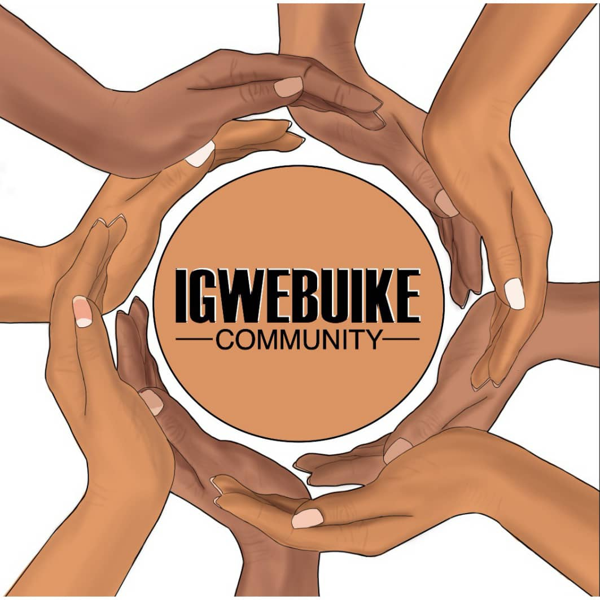

Who We Are

Ever thought of speaking to your phone in Igbo? Just being able to say: "Sị́rị́, bìkò n̄yèrè’m ạ̀kạ́ kpọ̀ọ̀ n̄nè’m" and your phone will begin to dial your mother’s number?
Well, unfortunately you can’t do this at the moment, because existing speech recognition services (Siri, Google Home, Alexa) are not available in Igbo language or any African language (for now).
Speech technologies are part of the latest technological advancements in our world. Incidentally, they support only a handful of world languages, with
the Igbo language not being a part of these, despite being spoken by close to 30 million people. The major
obstacle towards the development of these new technologies in the Igbo language is the absence of large volumes of curated Igbo speech and text datasets.
It is this lacuna that we the Igwebuike Community set out to fill.
Igwebuike which means "Unity is Strength" is a grassroots online community of Igbo language speakers all over the world. Membership is free. The members of the Igwebuike Community are united by their common goal, which is to make curated Igbo datasets available on the internet. The Igwebuike Community will make use of Mozilla’s Common Voice platform in curating large volumes of Igbo speech, which will be made available to enable the creation of speech technologies for Igbo language.
Our Vision
Therefore, the vision of Igwebuike Community are as follows:- Initiate a unified and sustained global effort towards the preservation of the Igbo Language
- Curate Igbo speech data that will enable the development of various speech-related Artificial intelligence interfaces/platforms, using the in Igbo Language
- Entrench Igbo Language as one of the dominant technological languages of the world
- Create gateways for the development of varieties of Igbo-speech-related artificial intelligence technologies and interfaces
Our Mission
- Creating a global community of Igbo language speakers.
- Achieving our 2022 target of 1000 hours of recorded and validated Igbo sentences.
How You can Contribute to this initiative
- Recording/Validating voices in Igbo language.
- Gathering/Reviewing more Igbo sentences.
- Join our community groups.
- Spread the Word.
- Become a facilitator. We will advertise You in our Hall of Fame!
Communities supporting Igwebuike

Common Voice
Common Voice is a crowdsourcing project started by Mozilla to create a free database for speech recognition software. The project is supported by volunteers who record sample sentences with a microphone and review recordings of other users.
Masakhane
Masakhane is a grassroots organisation whose mission is to strengthen and spur NLP research in African languages, for Africans, by Africans. Despite the fact that 2000 of the world’s languages are African, African languages are barely represented in technology.